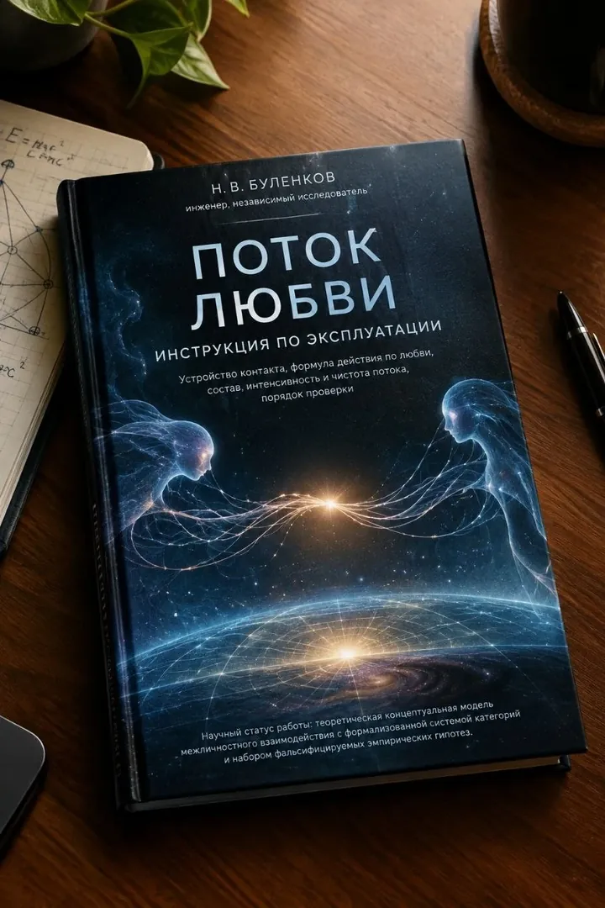
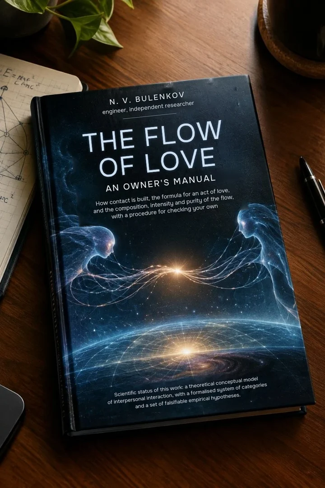
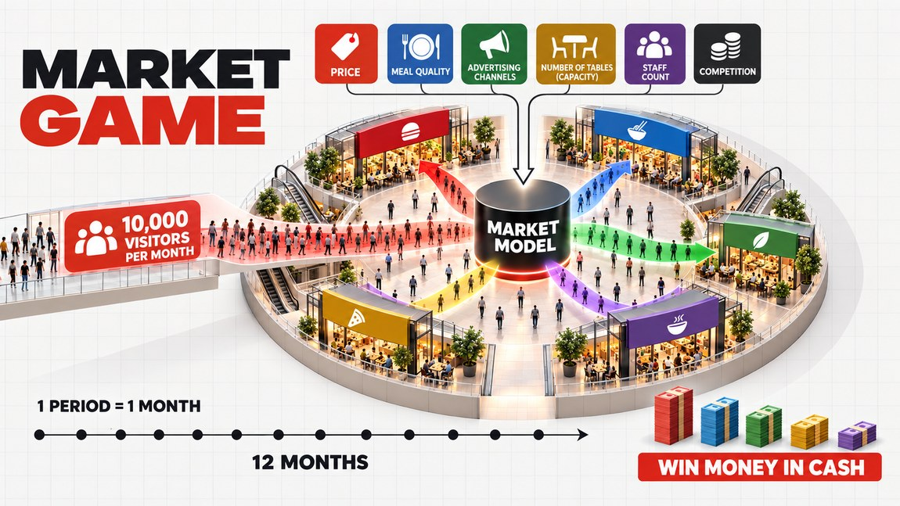
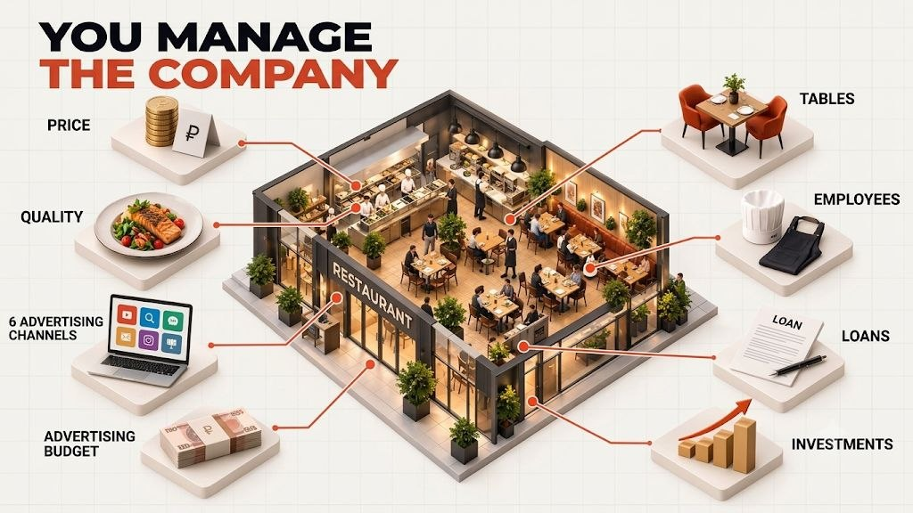

«Мне не хватает денег»“I don’t have enough money”
Начните с дешёвой ошибки: в игре она стоит очков, а не накоплений.Start with a cheap mistake: in the game it costs points, not savings.
Здесь вращается Земля. Ваш браузер не показывает 3D-графику, но переключатели и подписи работают.The Earth turns here. Your browser does not show 3D graphics, but the switches and captions work.
Мир начинается домаPeace begins at home
Наша гипотеза: люди разрушают себя, друг друга и планету, когда им не хватает любви и достатка. Включите — и посмотрите, что изменится.Our hypothesis: people destroy themselves, each other and the planet when they lack love and sufficiency. Switch them on and see what changes.
Состояние планетыState of the planet
Дефицит и принуждениеScarcity and coercion
Люди борются за то, чего не хватает. Болеют и воздух, и вода, и земля.People fight over what they lack. The air, the water and the land are all sick.
Blue Ocean
Достаток — это фундаментProsperity is the foundation
Когда денег не хватает на еду, жильё и лечение, человек живёт в режиме выживания. Дефицит сужает мышление: трудно думать о будущем, о других и о новом, когда всё внимание уходит на то, чтобы закрыть сегодняшний день. Отсюда вынужденный труд и драка за один и тот же пирог — красный океан.When money doesn't cover food, housing and health, a person lives in survival mode. Scarcity narrows thinking: it is hard to think about the future, about others or about anything new when all attention goes into getting through today. This is where forced labor and the fight over the same pie come from: the red ocean.
Blue Ocean — выход из этой драки: создавать новую ценность, а не отбивать чужих клиентов. Этому можно научиться, не рискуя своими деньгами: в бизнес-игре Market Game команды за один вечер проходят путь от ценовой войны к рынку, на котором зарабатывают все.Blue Ocean is the way out of that fight: create new value instead of taking customers from others. You can learn it without risking your own money: in the business game Market Game, teams go in one evening from a price war to a market where everyone earns.


Kaizen
Как понять, что отношения становятся лучше?How do you know a relationship is getting better?
Мы умеем измерять выручку, но не отношения — поэтому одни и те же ссоры идут годами. Двое любят друг друга и каждый день доказывают, что второй любит неправильно: слово одно, а определения разные.We know how to measure revenue but not relationships, so the same quarrels go on for years. Two people love each other and every day prove that the other one loves the wrong way: one word, different definitions.
Книга «Поток любви» — инженерный взгляд на контакт двух людей: из чего он состоит, как проверить, согласован ли он, и как из отдельных согласованных действий складывается поток любви. Это Kaizen для отношений: маленькие шаги, которые можно заметить и повторить.The book “The Flow of Love” is an engineer’s view of the contact between two people: what it is made of, how to check whether it is matched, and how individual matched actions add up to a flow of love. It is Kaizen for relationships: small steps you can notice and repeat.
ГлавнаяHome / ДеньгиMoney
Деньги · Blue OceanMoney · Blue Ocean
На большинстве рынков все дерутся за одних и тех же клиентов — и вода краснеет. Голубой океан — это пространство, где драться не нужно: вы создаёте новый спрос, а не отбиваете чужой. Этому можно научиться, не рискуя своими деньгами.In most markets everyone fights for the same customers, and the water turns red. A blue ocean is a space where there is no need to fight: you create new demand instead of taking someone else's. You can learn it without risking your own money.


Начните с дешёвой ошибки: в игре она стоит очков, а не накоплений.Start with a cheap mistake: in the game it costs points, not savings.
Посмотрите на рынок глазами владельца: откуда берутся деньги и почему их вечно не хватает.See the market through an owner’s eyes: where money comes from and why there is never enough.
Пройдите путь от открытия до кассового разрыва за один вечер — до того, как вложите свои деньги.Go from opening day to a cash gap in one evening, before you invest your own money.
Свобода начинается с понимания: что продавать, кому и по какой цене.Freedom starts with understanding what to sell, to whom and at what price.
Когда у всех одинаковый ИИ-консультант, выигрывает тот, кто умеет играть против живых людей.When everyone has the same AI consultant, the winner is the one who can play against live people.
Когда денег не хватает, всё внимание уходит на то, чтобы закрыть сегодняшний день. Исследователи называют это туннельным зрением дефицита: нехватка съедает ресурс, нужный для планирования (Муллайнатан и Шафир, «Дефицит»).When money runs short, all attention goes into getting through today. Researchers call it the tunnel vision of scarcity: lack eats up the capacity you need to plan (Mullainathan and Shafir, “Scarcity”).
Отсюда вынужденный труд и драка за один и тот же пирог. Выход не обязательно в том, чтобы уволиться: сначала нужно научиться видеть рынок иначе.This is where forced labor and the fight over the same pie come from. The way out is not necessarily to quit: first you need to learn to see the market differently.
Ким и Моборн, «Стратегия голубого океана»: красный океан — существующий рынок, где конкуренты делят спрос; голубой — новое пространство, где конкуренция перестаёт иметь значение.Kim and Mauborgne, “Blue Ocean Strategy”: a red ocean is an existing market where competitors split the demand; a blue ocean is a new space where competition stops mattering.
Ключ — инновация ценности: одновременно повышать ценность для клиента и снижать издержки. Цель не в том, чтобы победить соседа, а в том, чтобы драться стало незачем.The key is value innovation: raise the value for the customer and cut costs at the same time. The goal is not to beat your neighbor but to make fighting pointless.


Market Game
Первая игра почти всегда — красный океан: цены вниз, реклама на последние деньги, кассовый разрыв. После нескольких игр команды замечают: выгоднее поднимать качество и держать честную цену — тогда больше зарабатывают все.The first game is almost always a red ocean: prices go down, the last money goes into ads, a cash gap follows. After a few games, teams notice that raising quality and keeping a fair price pays off, and then everyone earns more.
В версии 5.0 это заложено в модель: спрос растёт и от качества, и от снижения цены. Голубой океан появляется не от кнопки, а от баланса решений всех участников. Это и есть play and learn: вывод не прочитан, а прожит.Version 5.0 builds this into the model: demand grows both with quality and with lower prices. The blue ocean does not appear at the press of a button; it comes from the balance of every player’s decisions. That is play and learn: the lesson is lived, not read.


Каждый ход команда ставит цену, вкладывается в качество, выбирает рекламу, добавляет столики, нанимает людей и берёт кредиты. Модель рынка распределяет клиентов, и команда получает отчёт: выручка, расходы, прибыль, деньги в кассе.Each turn a team sets its price, invests in quality, picks advertising, adds tables, hires staff and takes loans. The market model splits the customers, and the team gets a report: revenue, costs, profit, cash on hand.
Лига 12 · СтартLeague 12 · Start
Понять цену типичных ошибок раньше, чем заплатить за них своими деньгами.Learn the cost of typical mistakes before you pay for them with your own money.
Выбрать игру Pick a gameЛига 24 · РостLeague 24 · Growth
До 10 сотрудников и оборот до $1 млн в год. Проверить стратегию на длинной дистанции.Up to 10 employees and up to $1M in annual revenue. Test your strategy over a longer run.
Выбрать игру Pick a gameЛига 36 · ЭлитаLeague 36 · Elite
Стратегическая сессия с расширенным разбором для собственника.A strategy session with an extended debrief for the owner.
Выбрать игру Pick a gameЦены и ближайшие даты — на сайте игры; расписание показано в вашем часовом поясе.Prices and upcoming dates are on the game’s site; the schedule is shown in your time zone.
ЛагомLagom
В самый разJust right
Шведское «лагом» — не слишком мало и не слишком много. Деньги важны, пока закрывают базовые потребности и дают свободу выбора; дальше каждый следующий рубль даёт всё меньше (Jebb и соавт., 2018). Те, кто всегда ищет максимум, в среднем менее счастливы, чем те, кому достаточно хорошего (Schwartz и соавт., 2002). И в игре выигрывает не самая низкая и не самая высокая цена, а баланс.The Swedish “lagom” means not too little and not too much. Money matters while it covers basic needs and gives freedom of choice; beyond that each extra dollar gives less and less (Jebb et al., 2018). People who always look for the maximum are on average less happy than those who settle for good enough (Schwartz et al., 2002). And in the game it is not the lowest or the highest price that wins, but balance.
До того, как заплатите за ошибки своими деньгами.Before you pay for mistakes with your own money.
ГлавнаяHome / ЛюбовьLove
Любовь · KaizenLove · Kaizen
«Поток любви. Инструкция по эксплуатации» — книга инженера о том, что происходит между двумя людьми: из чего устроен контакт, как проверить, согласован ли он, и как из отдельных согласованных действий складывается поток любви.“The Flow of Love: An Owner’s Manual” is an engineer’s book about what happens between two people: what contact is made of, how to check whether it is matched, and how individual matched actions add up to a flow of love.
89 страниц · бесплатно · есть английская версия95 pages · free · also in Russian
Фразы из таблицы «Типичные неисправности». Книга устроена как техническая документация: признак, вероятная причина, первое действие.Phrases from the book’s “Common faults” table. The book is laid out like technical documentation: what is observed, the probable cause, what to check, the first action.
Вклад не принимается и возвращается к тому, кто даёт. Не наращивайте вклад: сначала разберитесь, почему прекратить давать труднее, чем изнашиваться.The contribution is not taken in and comes back to the giver. Do not increase it: work out why stopping the giving is harder than getting burned.
Оба говорят, и приём закрыт у обоих. Одному стоит перейти на приём: громкость только ухудшает.Both are on “give”, and reception is closed on both sides. One side switches to receiving: turning the volume up makes it worse.
Оба ждут, что начнёт другой, и канал пуст. Начать стоит тому, кто это заметил.Both are waiting to receive, and the channel is empty. Somebody starts transmitting, usually whoever noticed.
Встреч стало меньше без всякого события. Сосчитайте их за месяц и за прошлый год и назначайте контакты сознательно: само не восстановится.The intensity of the flow fell, with no event behind it. Count the episodes over the last month and over the last year, and arrange contacts deliberately: it will not restore itself.
Заботятся не тем, чего ждут. Спросите прямо, что нужно, и меняйте не старание, а «диапазон».What is given is not what is needed. Ask directly what the other person needs, and change band instead of increasing effort.
Хорошего стало слишком много. Восстанавливайте остальные связи: это не измена текущей.Matching with no way out: resonant overload. Restore your other connections; that is not a betrayal of the present bond.
«Тридцать лет я спрашивал людей, что такое любовь, и получал принципиально разные ответы». Один говорит «доброта», второй — «страсть», третий — «чтобы не предавал». Двое живут под одной крышей, оба любят и каждый день доказывают друг другу, что второй любит неправильно.“For thirty years I asked people what love is, and the answers I got were different in kind.” One person says “kindness,” the second says “passion,” the third says “never betraying me.” And so they live: two people under one roof, both loving, both spending every day proving to the other that the other loves wrongly.
Книга показывает: определения расходятся не содержанием, а координатой. Чувство — строка, поступок — столбец. Спорить, что важнее, — то же, что спорить, что важнее в адресе: улица или номер дома.The book shows that the definitions differ not in content but in coordinate: a feeling is a row of the matrix, a deed is a column. Arguing about which matters more is like arguing whether the street or the house number matters more in an address.
«Действие по любви — это когда оба что-то делают друг для друга, делают взаимно подходящее, оба этого хотят, оба на это согласны и никто со стороны не запрещает».“An act of love is when both of them are doing something for each other, what they are doing fits together, both want it, both consent to it, and nobody outside forbids it.”
Одно действие — ещё не любовь. Значение имеет то, что повторяется: поток. У него есть состав, интенсивность и чистота — доля времени, которая приходится на действия по любви. Поэтому улучшение становится заметным, а значит, возможен Kaizen.One act is not yet love. What matters is what repeats: the flow. It has a composition, an intensity and a purity, the share of time taken by acts of love. That makes improvement visible, and so Kaizen becomes possible.
Самое длинное исследование счастьяThe longest study of happiness
С 1938 года Гарвард наблюдает 724 мужчин — студентов университета и подростков из бедных районов Бостона, а теперь и больше 1 300 их детей. Самые довольные своими отношениями в 50 лет оказались самыми здоровыми в 80: это предсказывало старость точнее, чем холестерин.Since 1938, Harvard has followed 724 men, university students and teenagers from poor Boston neighborhoods, and now more than 1,300 of their children. Those most satisfied with their relationships at 50 were the healthiest at 80, a better predictor of old age than cholesterol.
Руководители исследования называют это «социальной формой»: отношениям, как телу, нужны регулярные упражнения. Это и есть Kaizen — маленькие шаги, которые повторяются.The study’s directors call it “social fitness”: relationships, like the body, need regular exercise. That is Kaizen: small steps, repeated.
ЛагомLagom
В самый разJust right
«Чистота, равная единице, недостижима и не является целью», — пишет автор. Хорошее не бесконечно: у него есть пик, после которого продолжение даёт всё меньше и стоит всё дороже. Выходить стоит вскоре после пика, а не когда надоест.“A purity of one is unreachable and is not the goal,” the author writes. Good things are not endless: they have a peak, after which continuing yields less and costs more. It is best to leave soon after the peak, not when you are tired of it.
Это теоретическая модель с набором проверяемых гипотез. Работа выполнена вне института и пока не проходила рецензирования. Психологическая и социологическая часть — обзор литературы и проверка источников — подготовлена в сотрудничестве с языковой моделью Claude (Anthropic); это прямо сказано в книге.It is a theoretical model with a set of testable hypotheses. The work was carried out outside any institution and has not been peer-reviewed. The psychology and sociology part (literature review and source checks) was prepared together with the language model Claude (Anthropic), as the book states openly.
Комментарии в книге открыты. Если вы исследователь, психолог или просто внимательный читатель — помогите развивать теорию.Comments in the book are open. If you are a researcher, a psychologist or simply a careful reader, help develop the theory.
«Найти подходящего человека — задача минимизации трения. Строить поток — задача согласованного взаимодействия». Для первой задачи есть «Шесть из шести»: шесть вопросов о главном — где жить, как жить вместе, как зарабатывать, во что верить, — и сразу видно, с кем вы сойдётесь без спора.“Finding a suitable person is a task of minimising friction. Building a flow is a task of matched interaction.” For the first task there is “Six of Six”: six questions about the essentials (where to live, how to live together, how to earn, what to believe), and you see at once whom you will agree with without a fight.
Работает при личной встрече: сканируете QR-код, и совпадение видно мгновенно. Приложение на русском, другие языки в разработке.It works when you meet in person: scan a QR code and see the match instantly. The app is in Russian; other languages are in development.
Если в отношениях есть насилие — вас бьют, запугивают, вы не можете уйти или рядом ребёнок, которому плохо, — разбор откладывается. Нужна помощь: найдите службу поддержки в вашей стране.If there is violence in the relationship (you are hit, threatened, cannot leave, or a child nearby is suffering), set the analysis aside. You need help: find a helpline in your country.
Скачайте книгу и найдите в ней свою «неисправность».Download the book and find your case in the table of common faults.